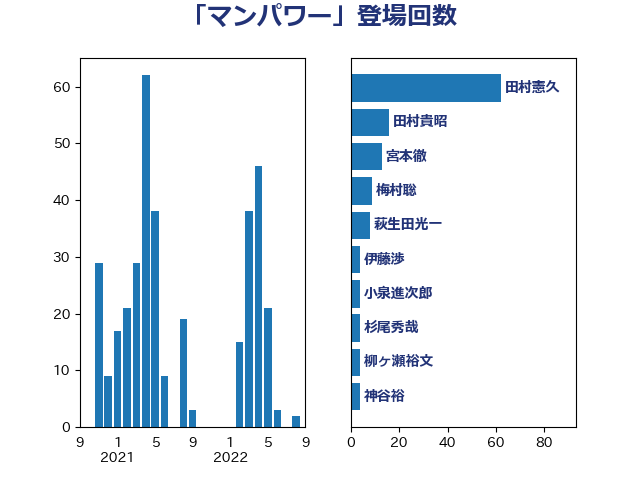

単語「マンパワー」

| 田村憲久 | 自由民主党 | 62 回 |
| 田村貴昭 | 日本共産党 | 16 回 |
| 宮本徹 | 日本共産党 | 13 回 |
| 梅村聡 | 日本維新の会 | 9 回 |
| 萩生田光一 | 自由民主党 | 8 回 |
| 伊藤渉 | 公明党 | 4 回 |
| 小泉進次郎 | 自由民主党 | 4 回 |
| 杉尾秀哉 | 立憲民主党 | 4 回 |
| 柳ヶ瀬裕文 | 日本維新の会 | 4 回 |
| 神谷裕 | 立憲民主党 | 4 回 |
| 紙智子 | 日本共産党 | 4 回 |
| 倉林明子 | 日本共産党 | 3 回 |
| 加田裕之 | 自由民主党 | 3 回 |
| 国光あやの | 自由民主党 | 3 回 |
| 小山展弘 | 立憲民主党 | 3 回 |
| 平山佐知子 | 無所属 | 3 回 |
| 末松信介 | 自由民主党 | 3 回 |
| 杉久武 | 公明党 | 3 回 |
| 梅村みずほ | 日本維新の会 | 3 回 |
| 清水貴之 | 日本維新の会 | 3 回 |
| 片山大介 | 日本維新の会 | 3 回 |
| 石橋通宏 | 立憲民主党 | 3 回 |
| 落合貴之 | 立憲民主党 | 3 回 |
| 谷合正明 | 公明党 | 3 回 |
| 馬場伸幸 | 日本維新の会 | 3 回 |
| ながえ孝子 | 無所属 | 2 回 |
| 仁木博文 | 無所属 | 2 回 |
| 吉川ゆうみ | 自由民主党 | 2 回 |
| 坂本哲志 | 自由民主党 | 2 回 |
| 大島敦 | 立憲民主党 | 2 回 |
| 山崎正恭 | 公明党 | 2 回 |
| 岸真紀子 | 立憲民主党 | 2 回 |
| 本田顕子 | 自由民主党 | 2 回 |
| 東徹 | 日本維新の会 | 2 回 |
| 森山浩行 | 立憲民主党 | 2 回 |
| 横沢高徳 | 立憲民主党 | 2 回 |
| 渡辺周 | 立憲民主党 | 2 回 |
| 熊谷裕人 | 立憲民主党 | 2 回 |
| 牧山ひろえ | 立憲民主党 | 2 回 |
| 福島みずほ | 社会民主党 | 2 回 |
| 谷川とむ | 自由民主党 | 2 回 |
| 野田聖子 | 自由民主党 | 2 回 |
| 金子恭之 | 自由民主党 | 2 回 |
| 阿部知子 | 立憲民主党 | 2 回 |
| 須藤元気 | 無所属 | 2 回 |
| 高木啓 | 自由民主党 | 2 回 |
| 高良鉄美 | 無所属 | 2 回 |
| 一谷勇一郎 | 日本維新の会 | 1 回 |
| 上田清司 | 国民民主党 | 1 回 |
| 中川宏昌 | 公明党 | 1 回 |
| 中野英幸 | 自由民主党 | 1 回 |
| 串田誠一 | 日本維新の会 | 1 回 |
| 伊藤岳 | 日本共産党 | 1 回 |
| 住吉寛紀 | 日本維新の会 | 1 回 |
| 佐藤英道 | 公明党 | 1 回 |
| 保岡宏武 | 自由民主党 | 1 回 |
| 勝部賢志 | 立憲民主党 | 1 回 |
| 原口一博 | 立憲民主党 | 1 回 |
| 古川元久 | 国民民主党 | 1 回 |
| 國重徹 | 公明党 | 1 回 |
| 大塚耕平 | 国民民主党 | 1 回 |
| 安江伸夫 | 公明党 | 1 回 |
| 安達澄 | 無所属 | 1 回 |
| 小沢雅仁 | 立憲民主党 | 1 回 |
| 小沼巧 | 立憲民主党 | 1 回 |
| 小熊慎司 | 立憲民主党 | 1 回 |
| 山口那津男 | 公明党 | 1 回 |
| 山本博司 | 公明党 | 1 回 |
| 山田太郎 | 自由民主党 | 1 回 |
| 岸田文雄 | 自由民主党 | 1 回 |
| 川田龍平 | 立憲民主党 | 1 回 |
| 平井卓也 | 自由民主党 | 1 回 |
| 後藤茂之 | 自由民主党 | 1 回 |
| 本田太郎 | 自由民主党 | 1 回 |
| 杉田水脈 | 自由民主党 | 1 回 |
| 武田良太 | 自由民主党 | 1 回 |
| 河野義博 | 公明党 | 1 回 |
| 浅田均 | 日本維新の会 | 1 回 |
| 浜地雅一 | 公明党 | 1 回 |
| 深澤陽一 | 自由民主党 | 1 回 |
| 玉木雄一郎 | 国民民主党 | 1 回 |
| 田中健 | 国民民主党 | 1 回 |
| 田野瀬太道 | 無所属 | 1 回 |
| 石井啓一 | 公明党 | 1 回 |
| 福重隆浩 | 公明党 | 1 回 |
| 竹谷とし子 | 公明党 | 1 回 |
| 美延映夫 | 日本維新の会 | 1 回 |
| 舟山康江 | 国民民主党 | 1 回 |
| 西村康稔 | 自由民主党 | 1 回 |
| 赤澤亮正 | 自由民主党 | 1 回 |
| 鈴木宗男 | 日本維新の会 | 1 回 |
| 鈴木憲和 | 自由民主党 | 1 回 |
| 鈴木貴子 | 自由民主党 | 1 回 |
| 長坂康正 | 自由民主党 | 1 回 |
| 長妻昭 | 立憲民主党 | 1 回 |
| 長峯誠 | 自由民主党 | 1 回 |
| 阿達雅志 | 自由民主党 | 1 回 |
| 青山大人 | 立憲民主党 | 1 回 |
| 青木愛 | 立憲民主党 | 1 回 |
| 音喜多駿 | 日本維新の会 | 1 回 |
| 馬場成志 | 自由民主党 | 1 回 |
| 高橋千鶴子 | 日本共産党 | 1 回 |
| 高野光二郎 | 自由民主党 | 1 回 |
| 麻生太郎 | 自由民主党 | 1 回 |